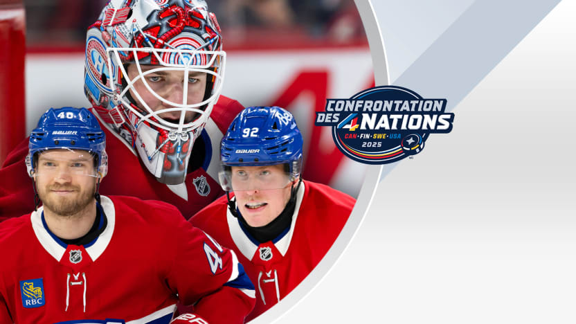

L’appel du devoir national
Armia, Laine et Montembeault représenteront le Tricolore à la Confrontation des 4 nations

par
Evan Milner / canadiens.com
12 février 2025
MONTRÉAL - Trois joueurs des Canadiens porteront des nuances de bleu-blanc-rouge un peu différentes dans les deux prochaines semaines.
Joel Armia et Patrik Laine revêtiront le bleu marin et le blanc de la Finlande, tandis que Samuel Montembeault endossera le rouge classique du Canada. Ensemble, ils arboreront donc les couleurs combinées du Tricolore à la Confrontation des 4 nations.
À Montréal, une ville où le hockey est bien plus qu’un sport et où le Centre Bell s'érige telle la cathédrale de ce jeu sur patins, porter l’uniforme des Canadiens est souvent l’apogée de la carrière d’un joueur.
Un talent du coin, Montembeault a baigné dans la culture en grandissant. Armia, qui représente la Sainte-Flanelle depuis maintenant sept ans, a appris à s’en imprégner. Et Laine, qui en est à sa première saison avec l’équipe, commence à comprendre la vie sous les feux des projecteurs montréalais.
Mais, quand il est question de hockey, il y a quelque chose d’unique et de spécial dans le fait de représenter son pays sur la scène internationale, surtout cette année.
Pour la première fois en près de 10 ans, la Ligue nationale de hockey met sa saison sur pause le temps d’un tournoi international qui verra s’opposer la crème de la crème du Canada, de la Finlande, de la Suède et des États-Unis à Montréal et Boston, du 12 au 20 février 2025.
FINLANDE
« Conventionnel » n’est pas exactement le mot qui décrirait le parcours ayant mené à la nomination de Laine au sein du contingent finlandais. En fait, il est l’un des trois seuls joueurs à avoir obtenu son laisser-passez sans préalablement avoir disputé de match dans la LNH cette saison, au moment de la remise des formations officielles au comité le 2 décembre. Si cela témoigne d’une chose, c’est que la direction de la Finlande a fort confiance en la capacité de la vedette de 26 ans à performer sur la plus grande scène du hockey.
Laine partage aussi ce sentiment.
« Je savais que, si j’étais au sommet de ma forme et que j’avais joué, je pourrais aider l’équipe et que j'en ferais probablement partie. J’étais évidemment très content d’être nommé au sein de la formation. C’est très spécial. »
Si des doutes persistaient à son égard après que Laine n’eut pas connu d’action pendant presque un an, le deuxième choix au total en 2016 les a fait taire dès sa première sortie dans l’uniforme des Canadiens.
De retour sur ses patins dans le cadre d’un match de saison le 3 décembre dernier, pour la première fois en 355 jours, Laine a dirigé l’une de ses typiques frappes pour battre le gardien des Islanders, avant de déjouer le portier des Predators d’un lancer presque identique le match suivant. Quelques jours plus tard, il marquait son troisième but en avantage numérique à son quatrième match avec Montréal. Puis, le 17 décembre, le numéro 92 enflammait le Centre Bell d’un tour du chapeau.
Pas mal pour quelqu’un qui dit ne pas avoir touché à un bâton de hockey pendant sept à huit mois en 2024 (à la suite d’une blessure et pour des raisons personnelles).
« J’ai pris une assez longue pause avant de reprendre mon bâton, mais je suppose que la touche y est encore », a commenté Laine le 14 décembre dernier. « Il y a encore beaucoup de choses que je dois travailler en ce moment, mais, au moins, l’une de celles pour laquelle je suis reconnu fonctionne encore. »
Ses 216 buts compilés depuis son arrivée dans la Ligue en 2016 et le succès qu’il a connu sur la scène internationale, lui qui a notamment été élu Joueur par excellence du Championnat du monde 2016 de l’IIHF à l’âge de 18 ans seulement, ont également courtisé le Leijonat, qui sera en quête d’une médaille d’or le mois prochain.
Pour sa part, le nom d’Armia n’est pas celui qui retient le plus l’attention chez le contingent finlandais, mais l’attaquant se prépare tout de même à jouer un rôle important dans la première édition de l’évènement. La Finlande, comme les trois autres équipes, ne sera pas à plaindre en ce qui a trait au talent de fine pointe formant ses principaux trios. Mais, Armia amène quelque chose de différent.
Bien qu’apte à produire offensivement, comme le reflète son record personnel de 17 buts en 66 matchs la saison dernière, ce sont les prouesses défensives de l’avant de 31 ans qui sont convoitées en vue de la Confrontation des 4 nations. Le natif de Pori, en Finlande, a prouvé être un défendeur tenace en désavantage numérique pour les Canadiens et a l’habitude de s’opposer aux meilleurs joueurs adverses soir après soir dans la LNH. Cela semble être le mandat tout indiqué pour Armia en vue du tournoi, rôle qu’il se dit d’ailleurs prêt et enthousiaste à incarner.
CANADA
Quand le Canada appelle, tu réponds… à moins d’être dans l’autobus de l’équipe après une défaite à Boston.
Car c’est là que se trouvait Montembeault quand le directeur général adjoint de l’unifolié, Julien Brisebois, a tenté de le joindre pour lui annoncer la nouvelle.¨ Il n’y a pas à dire, le cerbère de 28 ans a rapidement donné suite au coup de téléphone manqué.
« J’étais très fier quand j’ai reçu l’appel », a-t-il dit.
« C’est une belle marque de confiance. Ils étaient plusieurs directeurs généraux dans la Ligue à travailler ensemble pour former l’équipe. C'est plaisant de voir qu’il y en a plusieurs qui me font confiance pour faire partie des trois gardiens qui vont représenter le pays. »
Les chiffres de Montembeault cette saison - une moyenne de buts alloués de 3,00 et un pourcentage d’arrêts de ,897 - ne font pas tourner les têtes, mais ses statistiques sont loin de raconter toute l’histoire derrière sa campagne 2024-2025.
« Il tient le fort. Il nous a gardés dans le match tellement de fois, a dit Laine. C’est pour ça qu’ils l’ont choisi pour faire partie d’Équipe Canada. Il se montre à la hauteur dans les moments importants. »
Celui qui a complété trois blanchissages jusqu'à maintenant cette saison sait qu’il devra maintenir ce genre de forme en vue de la compétition.
« Ils vont probablement y aller avec le gardien qui performe le mieux [au commencement du] tournoi. Il n’y a pas beaucoup de temps pour les entraînements [avant le] début, donc ça va être le gardien qui va connaître un bon rythme qui va probablement commencer. »
QUE LE MEILLEUR GAGNE
Si l’on en croit ce que disent les experts, Équipe Finlande est celle dont les capacités à gagner sont les plus sous-estimées. Mais ne vous fiez pas aux ouï-dire, car pour une troupe qui compte des joueurs comme Aleksander Barkov, Sebastian Aho, Laine et Mikko Rantanen dans ses rangs, tout titre s’approchant de celui d'exclu semble tiré par les cheveux.
« Je pense qu’on a une très bonne équipe. Je n’ai pas aimé les prédictions à la télévision quant à nos chances de remporter le tournoi, donc on va essayer de prouver aux gens qu’ils ont tort, a dit Laine. Je pense qu’on va être très bons et je crois qu’on pourra surprendre certaines équipes. »
De leur côté, Montembeault et une Équipe Canada remplie de talents, dont Sidney Crosby, Cale Makar et Connor McDavid, espèrent être à la hauteur des attentes.
Le Canada et la Finlande s'affronteront en ronde finale des tours de qualification le 17 février à 13 h 00 HE au TD Garden.
Bonne chance Samuel, et onnea, Joel et Patrik!